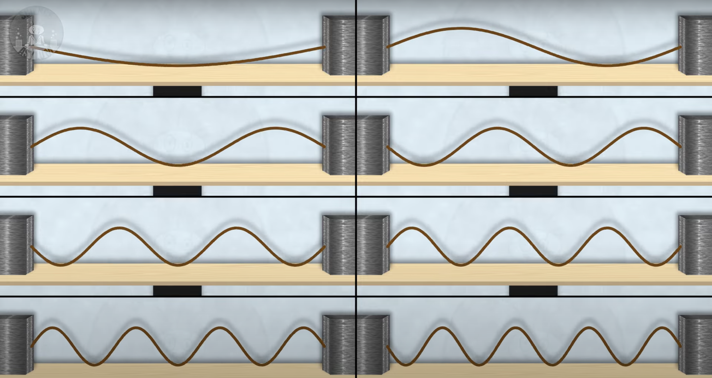
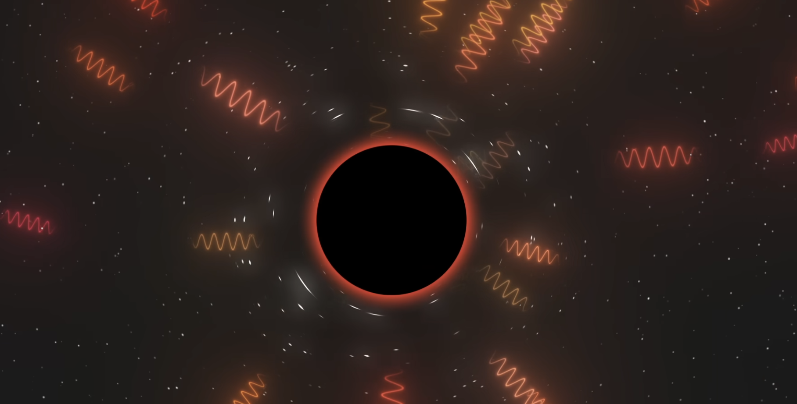

By Eduardo Barranco
Fuzhou Lakeside International School (FLIS)
MYP5 Personal Project, Research Paper
Mr. Callum Alexander Jackson, Mr. Sam Blenkinsop
Date: February 28th, 2025
Hawking Radiation
Insights into Black Hole Thermodynamics and Quantum Mechanics
Fig 1.1 Doubly Wraped Black Hole. NASA’s Goddard Space Flight Center/Jeremy Schnittman and Brian P. Powell
Introduction
Black holes, once considered the unquenchable stomachs of the universe that not even light dares to escape, are now proven to be radiating bodies by the Hawking radiation theory proposed by Stephen Hawking in 1974. Black holes were thought only to be able to absorb matter and energy but, after Hawking's theory they have also been proven to radiate in the form of heat. Hawking radiation reveals a mysterious quantum process at the event horizon that may unlock new theories to explain our universe. How will Hawking radiation affect the thermodynamics of black holes and the information paradox? In this paper, we will delve through the depths of a black hole, gaining an understanding of the theory of Hawking radiation, and its meaning to the world of physics. Hawking radiation proposes a new quantum perspective on black holes and emphasizes the need for a consistent and unified theory of Everything. The paper will analyze theoretical concepts from quantum field theory, thermodynamics, and general relativity.
Black Holes
Black holes are one of the most abstract yet simple-looking cosmic objects. These objects aren’t holes; they are spherical regions of huge mass concentrations compacted into tiny spheres. The high density in black holes produces such gravitational pull that at the Event horizon, not even light is fast enough to escape. Black holes are very mysterious, mostly due to their characteristic black color. We are not certain what is inside a black hole; this occurs due to light being unable to escape. When light approaches the black hole, it gets consumed by it, therefore unable to reflect the black hole's interior and escape the black hole. When light goes inside the black hole, the graviatational pull of the black hole does not allow the light to escape, that is why we see a black shpere. The border of this sphere is called the Event horizon.

Fig 2.1 Graph of Gravity Bending Space-Time. (“The Anatomy of Black Holes - Page 11,” 2015)
What is the Event Horizon?
The exact point in space-time that not even the fastest objects in the whole universe can escape from is called Event horizon. They have only been spotted in black holes. The Event horizon is not exactly a point but the black hole’s circumference. This is the line in which the gravitational pull is such that no light can escape. There may seem to be some sort of occurrence or effect when crossing the Event horizon and adventuring into the black hole, but your entry won’t be clearly known. When you approach the black hole, for a bystander, your figure will start to slow down as you get close to the black hole. Your watch will start to tick slower in comparison to the bystander. As you get closer to the Event horizon, your image will start to fade, and your image will be painted with some sort of ‘orangish’ color. Slowly the bystander will see your frozen image vanish, and one day there will be no longer any trace of you.
How are Black Holes made?
The same way things die, other things are born. Even though stars have an incredible life expectancy, they also die. Stars are mainly composed of hydrogen and helium. These gasses act like fuel. These gases react with each other and create an outward push, fighting with gravity that caves in. As the star runs out of fuel, its outward push becomes weaker, and gravity starts to cave in. The gravity pushes the star’s matter inwards, therefore making it smaller. Eventually, the star’s core builds up iron, which cannot undergo fusion, and the star becomes reduced in size. The stars density increases as well as its gravitational pull. As gravity compresses the star, there is a point in which the star is so compressed, that a Supernova occurs. That is the death of the star and the birth of a black hole. Now that we know how stars die, let’s see how black holes die?
Fig 3.1 Real Black Hole Image. NASA/CXC/Villanova University/J. Neilsen
How do Black Holes radiate?
As I said before black holes are spherical regions, often surrounded by matter. This matter radiates light; therefore, it can be detected from Earth. However, this radiation is indirect. It comes from the matter that orbits the black hole, not from the black hole. The black hole is not an object but a region. Black holes are regions of space, they are places where anything that goes in is stored forever. Since it is a region, it should not radiate because it has no surface. Near the Event horizon space is empty, since space itself is what we call a vacuum. Which refers to a place where nothing exists. Although this is correct, according to quantum physics space is in fact filled with fluctuations that are present everywhere, even in a vacuum.
These fluctuations contain waves called virtual particles. Some with positive energy, and others with negative energy. In quantum physics, a “vacuum” is created when these fluctuations cancel each other, therefore, not influencing space. Although a “vacuum” only exists in certain frequencies. Virtual particles are waves and there are many types. They have different wavelengths, which leads to an infinite variety of them. If we had two heavy stones and a rope between them we could get many different vibrations.

Fig 4.1 Quantum Fluctuations. “How Does Hawking Radiation REALLY Work? - YouTube.”
If you had a radio and you scrolled through the different frequencies, you would hear noise, and as you are scrolling through these frequencies, you would eventually hear silence. Once you hear silence, you know you found the frequency of two very important particles. The positive and the negative particles. These two peculiar virtual particles cancel each other, therefore, allowing silence. We will further talk about these particles on the next paragraph. In a “vacuum,” even if silent, the fluctuations are still there but nothing propagates in the field. These are virtual particles, but what about the real ones? Real particles are waves that are not canceled out. Waves that don’t have a pair to cancel each other out. Those are real particles. This will be very important for the next paragraph.
Fig 4.2 Virtual Particles in a Black Hole. “Hawking Radiation - YouTube.”
The "Vacuum” consists of a wave of positive energy and a wave of negative energy. The negative energy cannot exist by itself. It needs positive energy to cancel out. If positive energy was the gas that we use on cars, negative energy would be a sort of anti-gas that eliminates the gas proportionally. If there was 1l of gas and 0.5l of anti-gas and we mixed them, there would be 0.5l of gas remaining. Although the catch is that anti-gas cannot exist by itself. Its sole purpose is of mere annihilation. These two particles appear everywhere, and they cancel each other instantly, but near a black hole, thanks to the incredible curvature in space-time that the black hole creates, its massive pull prevents them from annihilating. This causes the negative particle to fall inside the black hole. When a negative particle falls into the black hole, it annihilates one of the black holes’ positive particles which is equivalent to the black hole’s energy. Now the black hole has lost some of its energy. Therefore, making it smaller. The other positive particle that escaped the black hole, turns into a real particle. If we remember the positive particle was cancelling out with the negative one, but since it doesn’t have any negative particle to cancel out with it becomes a real one. This is what happens if the negative particle falls in, but what if the negatively charged particle manages to escape the black hole?
If a negative particle that carries negative energy manages to escape while the positively charged one falls in, the negative particle would be forced to have negative energy relative to an outside observer. This would contradict many laws of physics since real observable particles cannot be negatively charged, they would be unphysical. That is why the positive one always escapes.
So, the car (the black hole) that has 1l of gas (the black hole’s energy/positive particles) is slowly filled with anti-gas (negative particles) which causes the 1l of gas to vanish. The gas does not technically vanish, but it is transformed into heat. Hawking radiation is a form of heat radiation. On the spectrum, Hawking’s Radiation is classified as one of the weakest although this can change.
Now that we understand how black holes radiate, we can delve deeper into understanding what exactly that radiation is. This radiation is heat, and black holes release heat. Black holes are extremely big because they always feed on the Cosmic Microwave Background, which consists of positively charged particles that the Big Bang released. These positive particles roam the universe freely but in a few billion years, the universe will have expanded enough for these particles to scatter across it and become rare. Then, there will be more negative particles that fall inside than positive ones. Then, the black hole will start to lose energy, it will be slow at first, but as the black hole becomes smaller, it starts eating negative particles faster and faster. This happens because of three factors. As the black hole becomes smaller, space-time curvature becomes smaller and steeper, which increases the chance of virtual particles separating. As more negative particles fall in, more positive ones escape. This increases the temperature, which means more particle production. Finally, the runaway effect makes mass loss exponential, leading to rapid evaporation and the final black hole explosion. Yes, black holes do explode. There are so many positive particles escaping that it’s heat grows exponentially, leading to an explosion.

Fig 4.3 Radiating Black Hole. “Hawking Radiation - YouTube.”
Are there Parallel Universes?

Fig 5.1 Parallel Universes. "Stephen Hawking: How to build a time machine."
If black holes can mess with information, then maybe they can mess with reality itself. That’s where parallel universes come in. The idea is simple, what if our universe isn’t the only one? What if, every time something happens, reality splits, creating a new universe where things played out differently?
Black holes might be the key. When something falls inside, it’s gone from our universe, but does that mean it’s truly gone? Some theories suggest that instead of being crushed out of existence, matter and energy could be transported somewhere else—another universe, connected to ours through the black hole. If that’s true, black holes aren’t just destructive; they’re doorways. Some even think that every black hole could give birth to a new universe, each one slightly different from the other.
If parallel universes exist, there could be infinite versions of reality. A universe where Earth never formed, one where life evolved differently, maybe even one where you never read this. Right now, it’s all speculation, there is no proof that this happens, but if we ever prove it, it will mean our universe is just one thread in an endless cosmic web.
Conclusion
To wrap it all up, Hawking radiation changes many things in our understanding of black holes. It shows that black holes aren’t the mere voids of nothingness, as we once thought, they slowly lose mass and energy, radiating particles into space as they shrink. This process, predicted by Stephen Hawking, ties together quantum mechanics and general relativity in a way that might unlock answers to some of the universe’s deepest mysteries.
But Hawking radiation doesn’t just change our understanding of black holes; it pushes us to rethink everything about the fabric of reality. It’s not just about black holes disappearing, but about how information and energy behave when they reach the extremes of space-time. In the end, whether it’s the information paradox or the fate of the universe itself, Hawking radiation tells us that even the darkest corners of space have a story to tell, and we’re just beginning to listen.
Research Status
In 1973, Bekenstein proposed black hole entropy, which Hawking’s work a year later complimented perfectly. Hawking’s discovery of black hole radiation using quantum field theory was truly impressive. Nowadays, there have been a few modifications to Hawking’s radiation theory involving solutions to the Trans-Planckian Problem or the Loop Quantum Gravity Problem. Although some changes and discoveries have been made, we still don’t know what happens with the information that the black hole swallows, the Information Paradox. This is one of the biggest mysteries in history, proposing solutions such as parallel universes or a portal to a new universe. These are mere speculations.
Sources
“How Does Hawking Radiation REALLY Work? - YouTube.” Youtube.com, 2024, www.youtube.com/watch?v=rrUvLlrvgxQ. Accessed 18 Feb. 2025.
“Hawking Radiation - YouTube.” Youtube.com, 2024, www.youtube.com/watch?v=isezfMo8kWQ. Accessed 18 Feb. 2025.
“Hawking Radiation - YouTube.” Youtube.com, 2024, www.youtube.com/watch?v=qPKj0YnKANw. Accessed 18 Feb. 2025.
“What If You Fall into a Black Hole? - YouTube.” Youtube.com, 2024, www.youtube.com/watch?v=QqsLTNkzvaY&t=380s. Accessed 18 Feb. 2025.
Hawking, Stephen W. “Black Hole Explosions?” Nature, vol. 248, no. 5443, 1974, pp. 30-31.
Hawking, Stephen W. “Particle Creation by Black Holes.” Communications in Mathematical Physics, vol. 43, no. 3, 1975, pp. 199-220.
to, Contributors. “Radiation with a Blackbody Spectrum Radiated from an Event Horizon.” Wikipedia.org, Wikimedia Foundation, Inc., 24 Jan. 2003, en.wikipedia.org/wiki/Hawking_radiation. Accessed 18 Feb. 2025.
Tillman, Nola Taylor, and Daisy Dobrijevic. “Black Holes: Everything You Need to Know.” Space.com, Space, 6 May 2022, www.space.com/15421-black-holes-facts-formation-discovery-sdcmp.html. Accessed 18 Feb. 2025.
Stein, Vicky, and Daisy Dobrijevic. “Do Parallel Universes Exist? We Might Live in a Multiverse.” Space.com, Space, 3 Nov. 2021, www.space.com/32728-parallel-universes.html. Accessed 18 Feb. 2025.
Isaac. (n.d.). Starry Night. https://www.freepik.com/premium-photo/starry-night-sky-showcasing-vast-galaxy-filled-with-twinkling-stars-cosmic-landscape-capture_358916068.htm